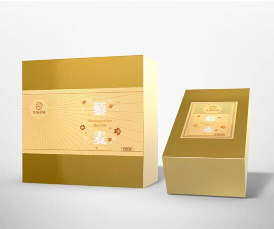

天域祁连藜麦：低脂低热营养全面 女性减肥瘦身理想食物
2017-04-21 09:38:32 来源: 综合 作者:
曾为减肥不能吃美食而倍感困扰，曾为瘦身不能吃饱饭而倍感遗憾。如今，抛开这些困扰遗憾，让天域祁连藜麦这种具备优质全面的营养餐食成为减肥瘦身中的必备，营养均衡，低脂低热，舌尖上享受美食，身体上享受轻盈!真是绝佳的选择!
作为NASA列为的人类未来移民外太空空间的理想“太空粮食”，作为拥有5000年种植和食用历史的印加人民的“粮食之母”，作为联合国粮农组织认定的唯一一种单体植物即可基本满足人体基本营养需求的食物，作为维密超模最爱的能够保持身材的秘密武器，藜麦用它超强的功效和超级全面的营养，给予女性最多元的呵护，确保其营养补充，更激发其身体活力!
走出减肥误区 人人都能拥有轻盈身姿
在传统观念中，减肥与节食有着密不可分的关系，仿佛只要不吃饭就能瘦下来!但往往不吃饭的结果是营养不良、贫血等问题出现，而体重并没有减轻多少。其实这种观念早已被医学家、科学家、营养学家所抛弃。减肥的核心在于控制热量和保持肌肉运动量，而控制热量的基础在于在有限的热量范围内，摄取充足的优质碳水化合物、维生素、蛋白质等营养。因此在减肥期间，很有必要定制营养菜单，确保身体营养的摄取，而天域祁连藜麦就是营养菜单中理想之选!
作为一种粮食，藜麦最大的优势在于其含有比普通食物更多的优质蛋白，且氨基酸组成与人体接近，这就意味着它能够被人体更好的吸收，使人体摄取到优质充足的蛋白质。每天以藜麦作为主食，不必添加多余的肉类，更不必担心热量的堆积，当然能开心就餐，放心减肥。

营养全面低脂低热 健康之选
除了具备优质蛋白质，天域祁连藜麦还拥有人体所需的9中必须氨基酸、维生素、膳食纤维、矿物质等营养成分，真正做到营养全面又均衡。当人体缺乏氨基酸，身体虚弱、注意力无法集中等问题就会出现。当人体缺乏B族维生素，代谢缓慢，肌肤、眼睛、口腔会出现炎症反应，不利于减肥瘦身。当人体缺少膳食纤维，肠胃中的食物容易堆积，肠道功能减退，无法确保身体健康。而这些人体所需的营养物质，通过食用藜麦就能获得，简直是女性减肥的福音。
通常每100g熟藜麦中热值仅为120大卡，与100g熟米饭不相上下，但营养却远远比米饭丰富。与此同时，食用藜麦级容易有饱腹感，每日的进餐次数也能够相应的减少，因此体内没有多余的热量堆积，自然能够保持身体的轻盈。天域祁连藜麦作为近年来减肥女性的热门健康之选，只将来自祁连山的高品质藜麦带到女性身边，给予女性最全面的关怀，最贴心的营养补充，让女性能够拥有健康身体曼妙身材!